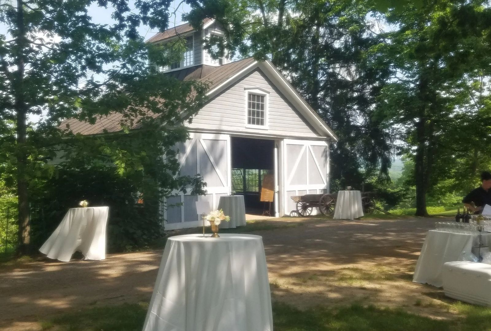
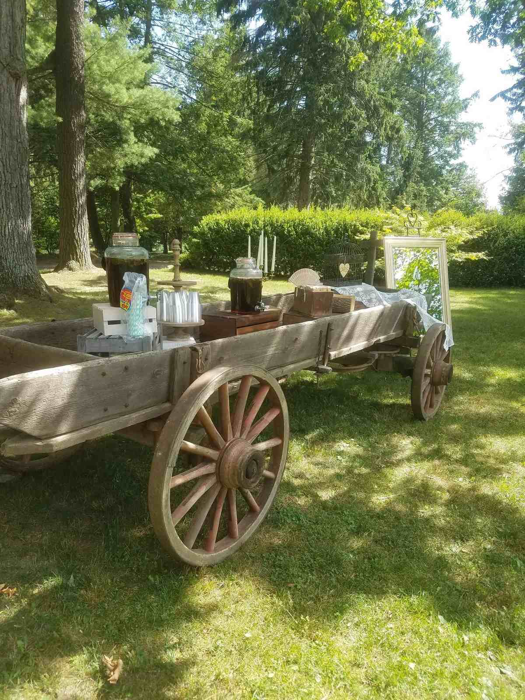
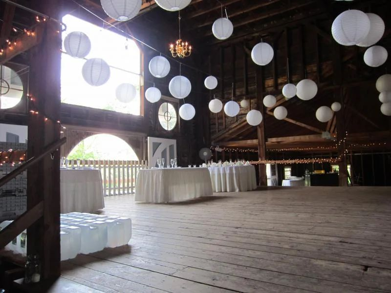

01 · Ceremony & reception
The Palladian Barn, 1801
Once the estate’s carriage barn, now a two-level venue with stalls on the first floor and a vast event space on the second. If it rains, the ceremony moves downstairs or upstairs.
Concept preview · not affiliated with Hudson Valley Weddings at The HillConcept · not affiliated with The Hill

Bells Pond Road · Hudson, NY
A historic 300-acre estate, with horse pastures, mountain views and the 1801 Palladian Barn.
Weddings May through October. 2027 dates: call to confirm.
2027 dates
Pick your wedding day and two alternates. We check each against the season The Hill publishes, then open an email to Lisa, the site manager, with all three dates. She handles appointments and availability.
This page doesn’t show live availability. The Hill hasn’t published a booked-dates calendar, so every date is a request until Lisa confirms. Call to confirm: 845-758-9002.
The estate, in order of the night
01 · Ceremony & reception
Once the estate’s carriage barn, now a two-level venue with stalls on the first floor and a vast event space on the second. If it rains, the ceremony moves downstairs or upstairs.

02 · Dinner
The Hill lists the barn for 75 to 300 guests for ceremony and reception. String lights in the barn come with it.

03 · Cocktails or the after-party
The old blacksmith’s shop, where the estate’s carriages were repaired, with lovely windows and a long farm table.
04 · Late
Wind the evening down by the fire. The Hill says to ask about setting one up. Call to confirm: 845-758-9002.
As listed by The Hill
The Hill quotes custom pricing for each wedding and doesn’t publish rates. This concept doesn’t estimate one.
Call to confirm: 845-758-9002
Thoroughbreds in the pastures, a gazebo, wildflower fields, peonies, apple trees and dogwoods.





Photos from hudsonvalleyweddings.net.
All from The Hill’s own website. Policies may change for 2027. Call to confirm: 845-758-9002.
Tours are by appointment with Lisa, the site manager.